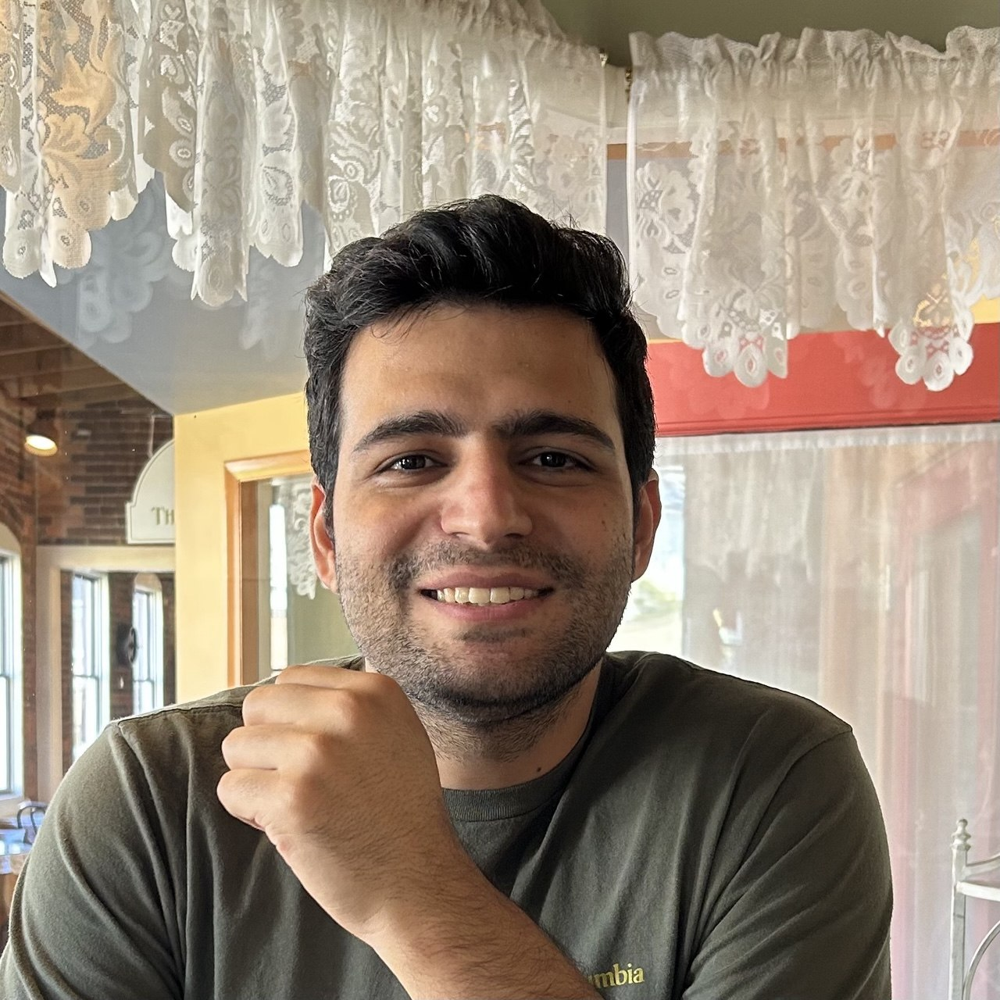

Continual Learning
Online adaptation under changing data distributions.
Machine learning researcher
I study how learning systems adapt to changing data while preserving useful knowledge.
My work focuses on online multimodal continual learning, self-supervised learning, and computer vision.
PhD Student
West Virginia University
Visiting Student
SCI Institute, University of Utah

About
I am a PhD student in Electrical Engineering at West Virginia University, advised by Dr. Gianfranco Doretto, and a visiting student at the Scientific Computing and Imaging Institute at the University of Utah.
My research explores continual and self-supervised learning for visual and multimodal systems. I am interested in models that can learn online, respond to distribution shifts, and retain knowledge over time.
Online adaptation under changing data distributions.
Representations that connect visual and textual signals.
Visual recognition, representation learning, and robust perception.
Experience and education
Scientific Computing and Imaging Institute, University of Utah
Research in machine learning and computer vision, with emphasis on continual learning systems, under Dr. Gianfranco Doretto.
West Virginia University
Electrical Engineering. Advisor: Dr. Gianfranco Doretto.
Intelligent Systems Laboratory, K. N. Toosi University of Technology
Research on deep-learning methods for lane detection and related computer vision problems.
K. N. Toosi University of Technology
Thesis on lane detection for autonomous vehicles using image processing and deep learning.
Shahid Bahonar University of Kerman
Thesis on PLC-based simulation of a mineral water production line.
Publications
Seyed Rasoul Hosseini, Omid Ahmadieh, Jeremy Dawson, Nasser Nasrabadi
Hamid Taheri, Seyed Rasoul Hosseini, Mohammad Ali Nekoui
International Journal of Intelligent Machines and Robotics, forthcoming
Kavian Khanjani, Seyed Rasoul Hosseini, Hamid Taheri, Shahrzad Shashaani, Mohammad Teshnehlab
Seyed Rasoul Hosseini, Hamid Taheri, Mohammad Teshnehlab
Academic service
Contact
I welcome conversations about continual learning, computer vision, and research collaboration.